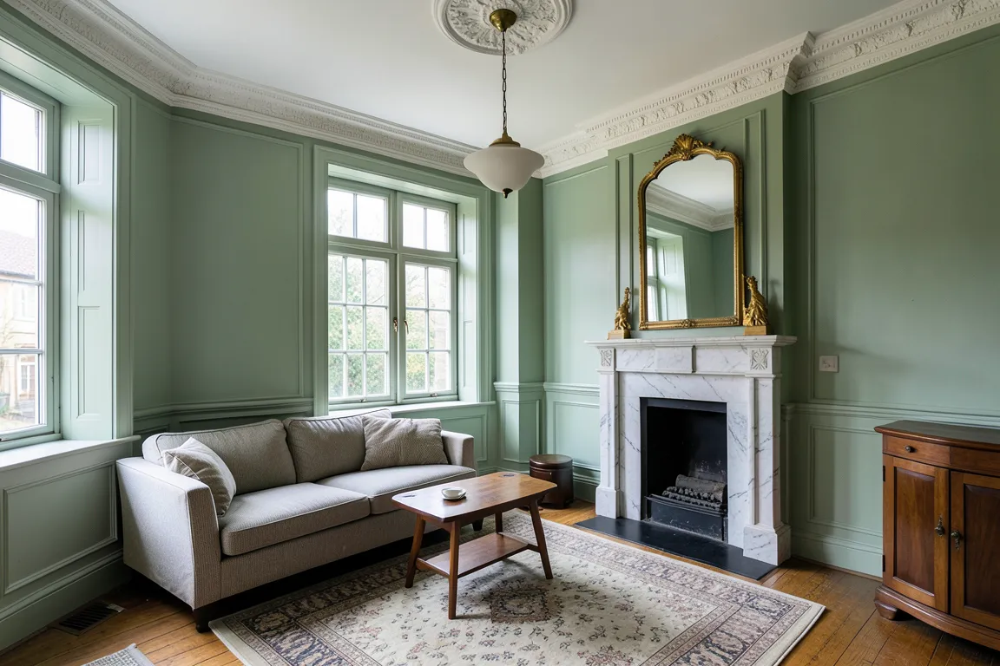

Det britiske og koloniale rommet under de fire Georgene. Veggene følger en klassisk orden av fotlist, felt og gesims; en peisomramming på midtlinjen, parvise dører og skyvevinduer setter én akse, mahognimøbler står langs veggene, og gulvets midte holdes fri.

Kjerneidé
Et rom er godt når proporsjonene følger de klassiske reglene og hver vegg svarer til veggen overfor.
Designprinsipper
Del hver vegg i fotpanel, felt og fris i en søyles proporsjoner: fotpanelet på omtrent en femtedel av veggens høyde.
Sett peisomrammingen midt på hovedveggen og tilpass dører, vinduer og pilarspeil om denne aksen.
Gi rommet enkle heltallsforhold: en enkel kube, en dobbel kube eller 2:3.
Still møblene langs veggene når rommet ikke er i bruk; flytt stolene til midten bare til en anledning.
Bruk én hovedvegg-farge i en myk mineraltone og fremhev listene i hvitt eller en lysere tone.
Hold ornamentet på arkitekturen: stukkaturtak, gesims, peisomramming og dørfôringer; la veggene mellom dem være glatte.
Heng bilder parvis og i symmetriske sett om peisen.